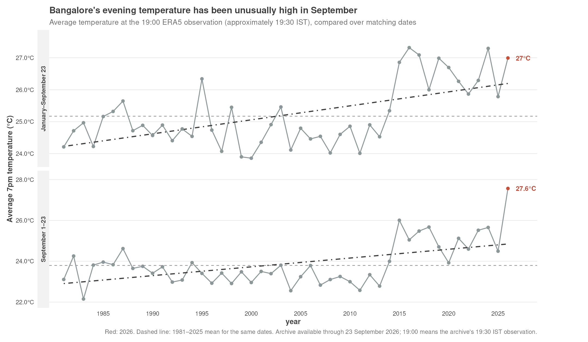

This post is AI-written.
September evenings have felt wrong this year. Not dramatically wrong - there is no single apocalyptic temperature reading to point at - but the usual evening relief seems to have gone missing.
I wanted to check that feeling using a simple measure: Bangalore's average temperature at around 7pm, tracked across the historical record. The answer was more striking than what I have seen in charts of maximum temperature or overall daily temperature. The evening reading makes the warming pattern much easier to see.
The data is the ERA5 archive, using one observation per day. There is a small timestamp wrinkle: the archive's hour-19 record corresponds to roughly 19:30 IST in the local-looking timestamps, so this is a consistent evening measure rather than a claim about an instantaneous 19:00 reading.

Through 23 September, the average evening temperature in 2026 was 27.0°C. Compared with the same January 1–September 23 window in earlier years, that is about 1.8°C warmer than the historical average. It ranks as the fourth-highest year in the 46-year archive, behind 2016, 2024 and 2017.
That is clearly warm, but not unprecedented. The broad 2026 story is not “the hottest year ever”. It is a persistently warm year, with the evening measure showing the change rather plainly.
September is where the chart becomes difficult to dismiss. The first 23 evenings of September 2026 averaged 27.6°C. The historical average for those same dates is 23.8°C, a difference of roughly 3.8°C.
That is the hottest September 1–23 period in the archive; the previous high was about 26.0°C. More importantly, this is not one bizarre evening pulling up an average: every available September evening in 2026 was above the historical average for the matching period.
The trendlines are useful here, but only as a summary of direction. They are not a forecast and they do not establish why the temperatures have changed. They show that the later years generally sit higher than the earlier years, while the 2026 September points sit in a distinctly elevated position at the edge of the series.
Why does the evening series look more pronounced than maximum or overall temperatures? My guess is that it is picking up a part of the day that people actually notice: whether the city cools down after sunset. A high maximum can be forgotten once the afternoon passes. An evening that stays warm affects dinner, sleep, fans, and the general feeling that the day never quite ended.
The counterpoint is that this is still a descriptive comparison. The local ERA5 archive currently ends on 23 September, so this is a provisional September 1–23 result, not a full-month ranking. And the evening temperature is affected by cloud cover, humidity, wind, rainfall and larger weather patterns. The chart can establish that the evenings were unusually warm; it cannot, by itself, identify the cause.
Still, I would now describe this September differently from a generic “hot year”. The sharper statement is: Bangalore's evenings have been unusually warm, and the first 23 evenings of September were exceptional even against that already-warm backdrop.
That feels closer to what the body is noticing.
Original question
Track the average 7pm temperature through the years and see how this years has been different. Especially September - feels much hotter in the evening